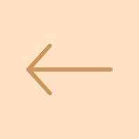
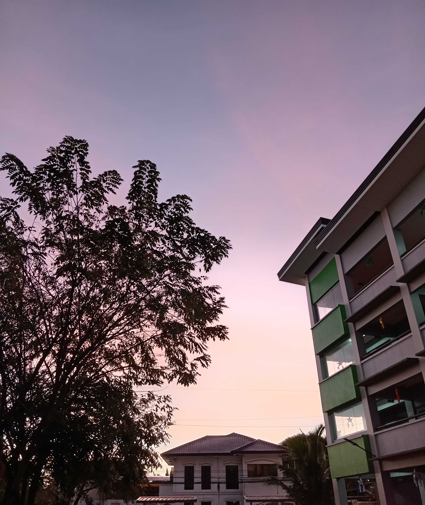
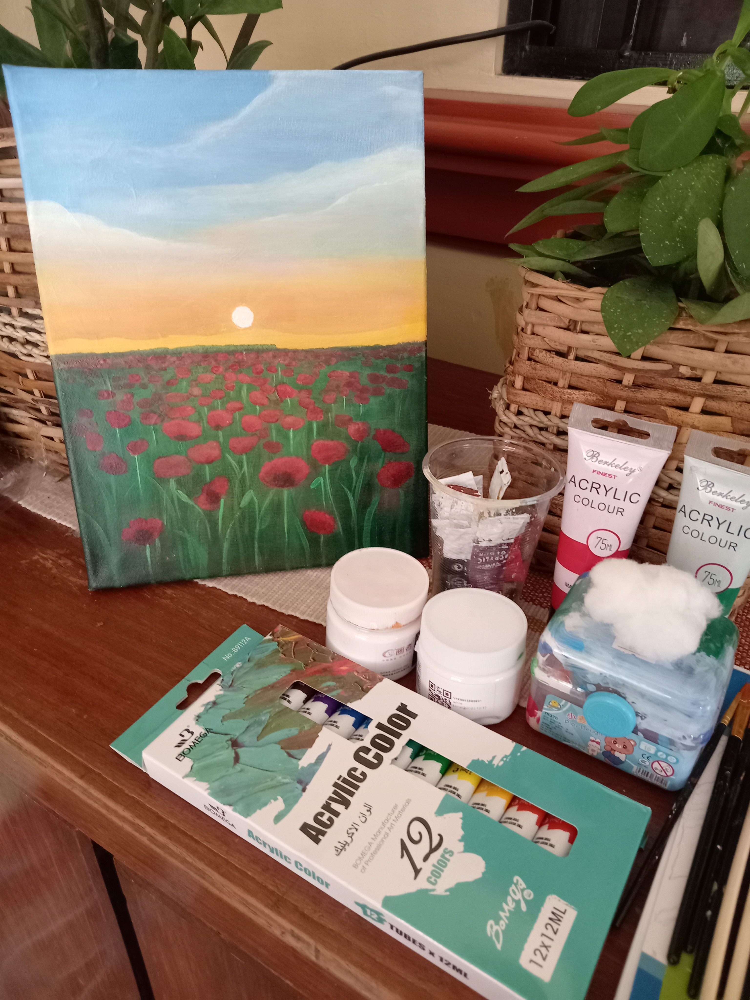
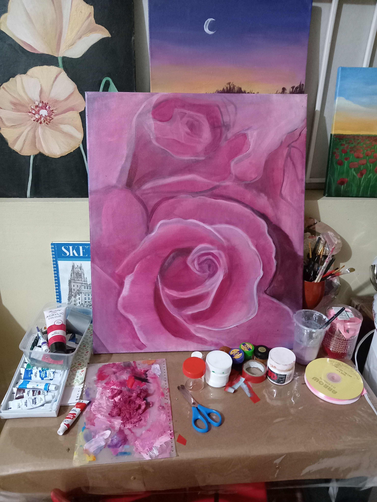
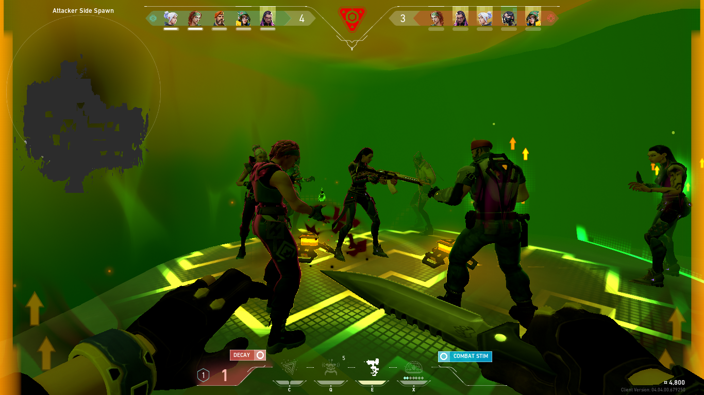

~ About me ~
My full name is Ma. Chrisha Niña T. Lubina, I was born in January 15, 2006, I am a middle child, I am already 18 years old
I am currently studying in LPCNSHS-DJC with the strand of TVL-ICT.

I live a block away from the school, When I was young I already liked the idea of drawing,
crafting, painting and many more. I really like art, life without art is just boring.
I want to do more things that I haven't done yet, Like creating dresses, learn an instrument and sing while using it
create a song that sounds good, and many more that is in my mind.
One of my talent is singing, I started singing lessons when I was grade 3, it was fun because it boosted my confidence that time
and singing makes me happy, I get to express my feelings by singing and feeling the songs that I hear.


Not only arts makes me happy, playing video games makes me happy too, I play with my best friend Justin online games when we are bored,
he introduced me to gamess that looks like pixels WAHHAHHAHAH it's really cool, because im used to playing 5v5 games
like Valorant, Mobile legends, and more...
